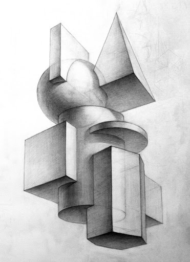
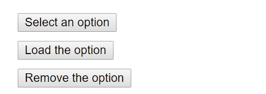
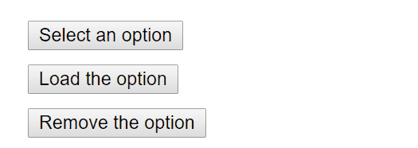

Kомпозиция

Александр Касперович, ISsoft

Александр Касперович


<FormControlLabel
control={<Checkbox
checked={state.checkedA}
onChange={handleChange}
name="checkedA"
/>}
label="Secondary"
/>
Checkbox c меткой

Не бойтесь совершенства. Вам его не достичь. Тем более, что в совершенстве нет ничего хорошего.
© Сальвадор Дали


onClick
 

onBlur + onFocus